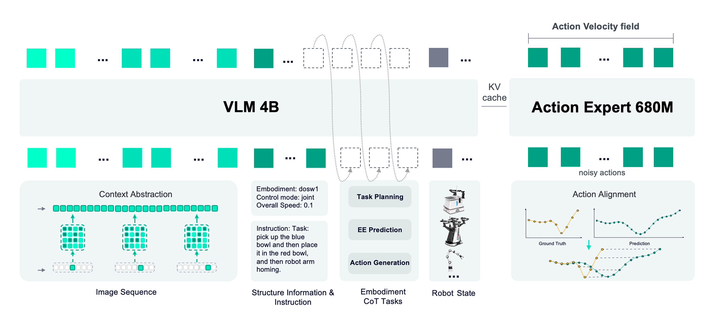
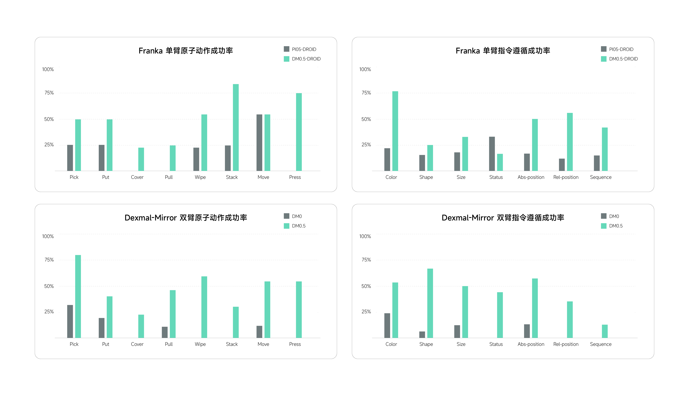
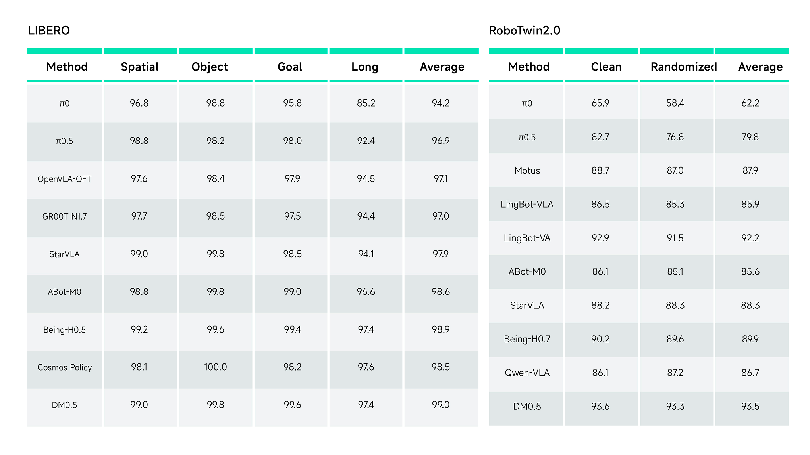
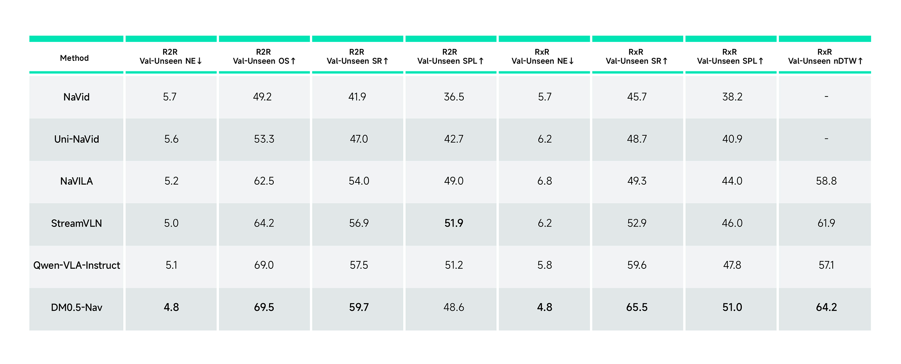
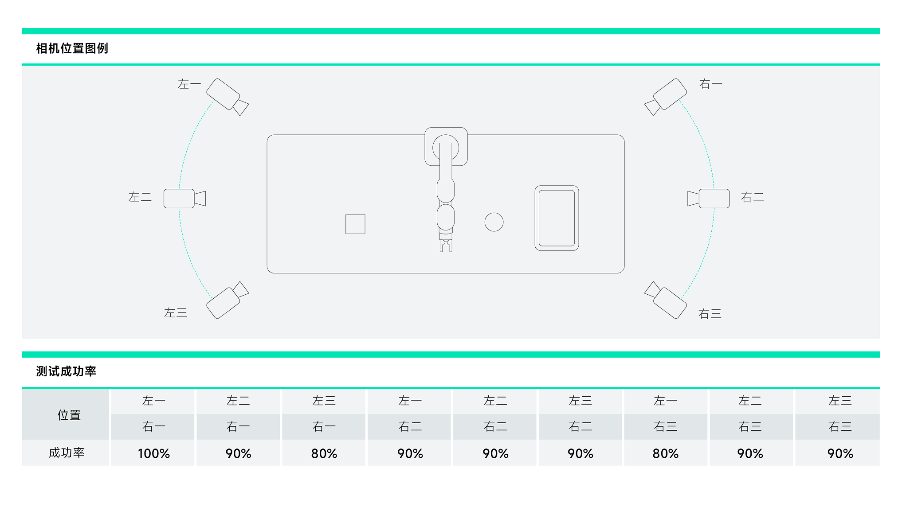

DM0.5 深读：记住过去，理解阶段，对齐动作
Dexmal · 官方技术博客与开源实现解读 · 核验日期：2026-11-02
先看重点：DM0.5 的三个设计分别改变训练的条件信息、共享表示目标和动作标签对应关系。历史使原本不可区分的样本可区分；具身语义任务给阶段信息更直接的梯度；动态匹配尝试去掉示教速度造成的监督差异。本文重点推导这三条作用链，并解释为什么降低训练损失仍不保证闭环成功。
历史如何改变梯度：把不可区分的训练样本分开具身语义任务如何影响表示：给动作损失补一条更直接的监督路径动态匹配如何改变优化目标：从模仿时钟到容忍轨迹进度差数据清洗与混合采样：它们实际上在重写训练分布系统优化怎样才算对训练有价值？
1 核心思想一句话总结
用历史上下文、具身语义监督和动态轨迹对齐，让动作策略适应更长、更复杂的任务。
2 论文背景与动机
先确认来源：这是技术博客，不是独立论文
本页主要依据 DM0.5 官方博客，辅以固定提交的 OpenDM 代码。截至核验时，未查到 DM0.5 独立的 arXiv 论文；官方仓库的发布入口指向技术博客。前代 DM0 论文可以帮助理解研究背景，但它的训练阶段、梯度策略和数据配置不能直接当作 DM0.5 的事实。
技术博客会更新，公开代码也持续变化。本页区分“博客宣称”“当前公开实现”和“本文分析”，不会把不同日期、不同 checkpoint 的信息拼成一套完整预训练配方。下文图号为本页编排编号，原博客没有统一编号。
为什么只看当前画面不够？
设想指令是“把杯子挪开，擦桌子，再把杯子放回原位”。擦完后，当前画面能看到杯子在哪里，却未必能知道最初在哪里。这是部分可观测问题：决定正确动作所需的信息没有全部出现在当前观测中。模型需要历史，而不仅是更准确的当前物体检测。
另一个问题是时间：两名示教者完成同一动作，一个快、一个慢。如果强制第十个预测动作只能匹配第十个示教动作，就可能惩罚运动路径正确、进度不同的预测。第三个问题是语义：同样是伸手接近杯子，可能处于“准备拿走”或“准备放回”的不同任务阶段。视觉相似并不意味着下一步动作相同。
必要概念与术语
VLA（视觉—语言—动作模型）把图像、文字和机器人状态映射为动作；VLM（视觉语言模型）负责联合理解图像与文字；动作专家负责生成连续控制量。DM0.5 沿这条路线扩展上下文与监督。它没有像 VPP2 那样把未来视频生成作为主线，因此不能把两者仅按参数量直接比较。
| 旧问题 | DM0.5 的变化 | 付出的代价与风险 |
|---|---|---|
| 单帧丢失过去的信息 | 历史采样与上下文压缩 | 采样可能漏掉短事件，历史增加计算 |
| 动作标签缺少任务阶段语义 | 11 类具身自回归任务 | 标注质量决定监督是否可靠 |
| 示教速度不同造成逐帧错位 | 动态动作匹配与连续性约束 | 对齐过于宽松可能掩盖真正的控制错误 |
3 核心方法/模型详解
图2：先读完整的数据流
阅读任务：从左侧视觉、状态与文本输入出发，沿 VLM 到动作专家的连接读图，再观察历史信息和训练任务的位置。

关键观察：博客描述 4B VLM 与 680M 动作专家。视觉语言表示通过 KV cache 供动作模块使用；KV 是注意力计算中的键和值，缓存让相同条件不必在每一步动作生成中重新完整编码。
推理桥：语义理解与连续控制有不同输出空间，把它们连接起来，可以让动作生成受语言与视觉条件约束。历史、状态和控制模式也是输入契约的一部分，不能只准备一张图片就默认复现完整能力。
证据边界：架构图不是完整运行配置；历史槽数、压缩细节、任务混合比例和训练预算不能从箭头推算出来。原图与说明
一个例子走通机制：挪杯、擦桌、复位
起点是当前多视角图像、机器人状态和任务指令。历史模块保存之前看见杯子原位置的证据；语言相关监督帮助模型区分“挪开”“擦拭”“复位”等阶段；动作专家生成下一段关节或末端动作。机器人执行后重新观测，下一轮根据变化继续预测。
训练时，假如示教者擦得更慢，轨迹匹配允许预测的进度对应示教中不同的时间索引，但仍要求先后顺序正确、连接合理。推理时没有真实未来示教供它匹配：这是训练标签的对齐机制，不是部署时查询答案。
删除历史，就可能无法确定原位；删除阶段语义监督，模型仍可能通过动作学习完成任务，但失去一种结构化学习信号；删除动态匹配，同一合法动作的不同执行速度更容易造成监督冲突。后两点是机制分析，博客没有用严格消融逐一量化它们。最终成功必须检查杯子回到原位置且擦拭完成，不能只看末端运动是否平滑。
历史上下文：记忆的内容如何进入模型？
Context Abstraction Layer（上下文抽象层）对历史进行时间采样和空间压缩，以固定视觉 token 预算表示历史槽。token 是模型处理的表示单元；压缩降低计算，却也丢失部分细节。博客概述最长约60秒的上下文，并通过随机历史长度和增强适应历史缺失或不完整的情况。
这不表示把60秒连续原始视频逐帧塞进模型，也不保证任何短暂事件都会被记住。例如电池只出现0.2秒，低频采样可能完全错过；关键帧保留策略是否能解决，需要专门测试。有限历史窗口也不等于无限持久记忆。
公开实现补充：固定提交的 MEM SFT 文档提供实际入口：从 Dexmal/DM05-MEM 初始化，按1 FPS请求32个主视角历史槽，数据集必须登记 fps。demo 共300帧、登记25 fps，后段约能提供10张非空历史；填满32槽约需800帧。这个 demo 配置不能反推博客所有实验都使用32秒历史，也不能把重复引用的 demo 图片当作真实记忆能力验证。
具身 CoT：学习任务阶段，不等于每步都要输出长篇推理
CoT 指用中间语义步骤表达任务推理。博客的 Embodiment CoT Tasks 包含11个自回归任务，按任务规划、事件/环境预测、动作生成三类组织。自回归指按顺序预测下一个符号或片段。阶段、下一步、进度、状态变化和动作语义等监督，使表示不仅描述“画面有什么”，还关联“事情进行到哪里”。
例如“杯子已移走，接下来擦拭”比单独描述“桌上有布”更接近动作决策所需的信息。但博客没有完整列出11项的标签模板、采样比例及损失权重。不能自行补出任务清单，也不能把这种训练监督等同于部署时每个动作 chunk 都生成显式推理文字。
本文分析：语言标签可能提供有用的阶段结构，也可能引入标注错误。看见模型生成合理的解释，并不能证明该解释忠实反映动作因果过程；需要改变阶段标签而保持视觉相同的对照实验。
动态动作匹配：对齐的是进度，不能丢掉接触过程
Trajectory Alignment Layer（轨迹对齐层）将固定长度预测动作与更密集的真实轨迹匹配。博客描述以动态规划寻找误差较小的对应关系，匹配索引严格单调，并加入片段间连续性约束。动态规划把全局最优路径问题拆成可复用的子问题，避免枚举所有组合。
用一个本文构造的标量例子解释：预测为 [0.10, 0.55, 0.90]，示教为 [0, 0.10, 0.10, 0.50, 0.55, 0.90]。如果固定匹配索引1、2、3，平方误差为0 + 0.45² + 0.40² = 0.3625；若按进度匹配索引1、4、5，三个位置误差为0。这里索引从0开始，数字仅用于说明，不是原文实验。
但误差为0并不一定是合法控制：跨过中间抓取、闭合夹爪或接触阶段，可能导致真实任务失败。因此顺序与连续性约束具有实质作用。博客没有披露精确代价函数、转移范围和约束权重，本页不把示意过程冒充作者的完整数学算法。仅凭这一段无法复现原训练层。
连续动作如何生成：流匹配的代码证据
动作 chunk是一次输出的一段连续动作。流匹配训练网络把噪声逐渐变成动作，网络预测的是生成过程中的变化方向。固定代码提交的 dm05_arch.py 使用以下约定，注意这来自公开 SFT 实现：
x_t = t · ε + (1 − t) · a
目标速度 u_t = ε − a
训练误差：预测速度与 u_t 的平方误差，结合动作 mask 汇总
a 是真实动作序列，ε 是同形状高斯噪声，t 是生成过程的时间，不是机械臂物理执行时间。t=1 对应噪声端，t=0 对应数据端；推理从1向0积分。取标量 a=2、ε=−1、t=0.4，则 x_t=0.8、目标速度为−3。因为积分时间向下走，沿这个方向最终抵达数据端。这里的符号约定与一些从0向1生成的论文相反，不能混用。
公开 forward 返回流匹配损失，并不自动证明博客描述的11项自回归任务和动态匹配都包含在该 SFT 路径中。完整预训练目标与用于下游微调的代码入口是两个不同层次。
训练主线：三个机制分别改变学习问题的哪一部分？
本文判断：DM0.5 最有价值的设计逻辑，是把动作监督中的三种混杂因素拆开处理：过去发生了什么、当前处于哪个任务阶段、示教者执行得有多快。前两种往往必须保留，第三种在部分任务中可以容忍变化。它们不是三个独立的“能力插件”，而是在改变模型被要求拟合的条件分布。
下面是本文的分析记号，不是作者披露的完整训练公式。令 c 为当前图像、指令、本体状态等条件，h 为历史，a 为示教动作片段，z 为阶段或事件等语义标签，τ 为动作与示教轨迹的匹配索引。可以把设计差异写成：
| 改动位置 | 训练前的问题 | 改动后希望模型学什么 | 作用到梯度的途径 |
|---|---|---|---|
| 条件 c → (c,h) | 同样当前条件可能要求不同动作 | 利用过去证据区分当前目标 | 动作误差通过条件表示影响历史特征的利用 |
| 单一动作目标 → 动作与语义目标 | 只要局部动作拟合好，阶段信息就可能被忽略 | 表示中保留任务相关的状态与关系 | 辅助语言损失直接监督共享表示 |
| 固定索引 → 有约束的 τ | 正确路径因速度不同而被判错 | 容忍部分时间伸缩，保留关键动作顺序 | 改变哪些标签与预测配对，从而改变误差方向 |
这张表是后面分析的主线。提供了历史不等于模型使用了历史；能预测阶段不等于阶段表示改善了动作；对齐损失下降也不等于闭环更成功。 必须分别验证三条因果链。
历史如何改变梯度：把不可区分的训练样本分开
回到杯子复位任务。构造两条示教：一条最初杯子在左边，一条最初在右边，之后两条轨迹都把杯子放在相同的临时位置。若当前图像、机器人状态与指令都相同，最后一步却分别要求向左和向右，那么仅用当前条件的策略无法确定哪一个目标属于这一回合。这首先是缺信息，不是模型容量不足。
为直观看清监督冲突，先考虑一个简化的确定性平方损失模型：两条样本的目标分别为−1和+1，输出都为 y。平均损失为 [(y+1)²+(y−1)²]/2 = y²+1，最小值在 y=0；它学到折中动作，却没有解决任一回合的复位要求。加入能够区分左右原位的历史 h 后，模型可以对两个条件分别输出−1和+1，冲突消失。
不能把这个例子直接当作 DM0.5 的行为定理。 DM0.5 使用流匹配，生成模型可以表达多模态分布，不必输出动作均值。缺历史时，它仍可能生成左或右两个合法模式；问题是无法从当前条件确定该选择是否符合这一回合的过去。历史的主要价值是让采样服从正确的回合条件，不是仅让生成动作更平滑。
更接近代码的说法是：流匹配学习 v(x_t,t,c,h)。对于平方速度损失，理想回归器估计给定输入下目标速度 u 的条件期望。按条件方差分解，在分布不变、表示充分、优化理想的条件下：
E[Var(u | x_t,t,c,h)] ≤ E[Var(u | x_t,t,c)]
这是统计解释，不是博客中的公式或实测结论。它表示增加有用信息可以降低无法由条件解释的目标不确定性；实际收益取决于历史是否包含信息、压缩是否保留信息，以及有限数据下模型能否学会使用。接近噪声端时 x_t 对真实动作的提示较弱，条件信息可能尤其重要，但其随 t 的收益曲线需要实验验证。
代码把信息送到了哪里？ _compute_prefix_cache 对历史图像提取特征，再做二维自适应平均池化，替换历史占位 token；无效历史槽被置零并从注意力中屏蔽。动作专家随后读取前缀的 KV 表示。池化是空间压缩，并不是独立的“记忆正确性损失”。当相关模块可训练且计算图未被截断时，动作损失才可能推动前缀表示保留有助于动作的信息；实际哪些参数更新还取决于冻结与优化器设置。仅看到 KV cache 不能断言主干被冻结，也不能断言完整预训练全链路反传。代码：历史处理
为什么可能学不到？ 如果大多数训练片段仅凭当前画面就能预测动作，优化器可以通过“忽略历史”的捷径降低平均损失。历史 dropout 能适应缺失输入，但过多 dropout 也可能进一步鼓励该捷径。因此需要足够的历史依赖样本，并对这种样本单独评估。最有效的诊断不是只比较有无历史的平均分，而是交换两个当前状态相同样本的历史：如果动作目标随历史正确改变，才更接近证明历史被决策使用。
具身语义任务如何影响表示：给动作损失补一条更直接的监督路径
连续动作损失并不是时间上稀疏的奖励，它对示教片段中每个有效动作维度都有监督。但这些数值标签未必直接要求模型显式区分任务阶段。比如“拿走杯子”和“放回杯子”的早期接近动作可能非常相似；大量局部运动误差可以下降，阶段切换的关键差异仍未学好。
设共享表示为 r=fθ(c,h)，动作专家为 gφ，自回归语言头预测语义标签 z。一个用于理解联合监督的示意目标是：
L = L_action(gφ(r), a) + λ · L_semantic(z | r)
∇θL = ∇θL_action + λ · ∇θL_semantic
这是本文重建的通用多任务形式，不是已核验的 DM0.5 预训练代码；博客未公开完整任务权重与梯度路由。它说明：即使当前动作误差对“杯子是否已擦完”不敏感，阶段标签仍可直接要求共享表示区分这个状态，从而给动作专家提供更容易使用的任务信息。
语义标签还可能把不同本体的相近行为联系起来。两种机械臂的关节维度与数值不同，却都能对应“对准插孔”“已抓住杯子”。如果辅助任务确实依赖视觉与状态，语言空间就可能提供跨本体共享的结构；动作专家负责把这种结构映射回各自控制量。这是合理作用机制，尚不是博客用消融证明的迁移来源。
联合监督也可能产生负迁移。 两类损失在共享参数上的梯度若长期指向冲突方向，一个任务的更新会损害另一个任务；文本模板过于容易时，模型也可能仅凭指令猜答案而不看图像。更长的回答会改变有效 token 数和训练权重，所谓收益可能部分来自训练预算变化。需要同时记录动作与语义验证损失、梯度范数与梯度夹角，并固定采样量与预算做对照。梯度夹角只是局部诊断，不是长期迁移收益的充分证明。
更重要的是区分两种路径：训练时语言监督塑造表示，与推理时生成语言再把它喂给动作模块。前者不必增加推理步骤；后者增加时延，并面临训练时真实标签、推理时预测标签不一致的问题。博客支持“引入自回归训练任务”，不足以确认每次动作预测都执行后者。因此不能用“模型先想清楚再动”代替实际的数据流分析。
可检验预测：若阶段监督确实有效，增益应更集中在当前外观相似但任务阶段不同的样本和阶段切换点；如果只提高语义问答正确率、闭环动作没有改善，就只能说明学会了辅助任务，不能声称改善了控制。还应比较正确标签、打乱标签、等长度非阶段文本三组，排除额外计算和格式学习的贡献。
动态匹配如何改变优化目标：从模仿时钟到容忍轨迹进度差
固定时间监督隐含一个强假设：给定当前条件后，未来第 k 个控制时刻应该对应示教者的第 k 个时刻。如果不同采集员的停顿和速度缺少可观测解释，这种对应就会把采集习惯作为标签差异。动态匹配把部分时间索引当作可以选择的隐变量 τ，尝试先寻找合理对应，再惩罚动作差异。
为分析其训练效果，可以写出一个抽象对齐目标，非作者原式：
L_align(â,A) = min_{τ ∈ M} [Σ_i d(â_i,A_{τ_i}) + λ R(â,A,τ)]
M：满足严格递增等约束的匹配集合
â 是预测片段，A 是密集示教轨迹，d 是点误差，R 表示跨锚点连续性代价。博客说明了最小匹配与连续性思想，但没有给出这里各项的确切函数，也没有公开它接入流匹配目标的具体位置。
在一个采用平方点误差、离散最优路径且局部匹配不变的示意实现中，点误差对 â_i 的梯度是 2(â_i−A_{τ_i})，而不是固定索引标签的 2(â_i−A_i)。所以它改变的不只是损失大小，还改变“把预测往哪个动作拉”的方向。最优路径切换时目标可能不光滑，连续性项也会贡献梯度；不能据此断言作者使用可微动态规划、软匹配或直接对索引反传。
一个必须追问的复现缺口：流匹配训练直接预测的是速度 v_t，不是干净动作 â。匹配究竟发生在构造噪声目标之前，还是通过速度恢复出的动作估计上，或某个额外分支上？这会改变监督含义、计算成本和梯度，博客没有讲清。固定提交的公开 forward 直接以原 action 构造 x_t 与 u_t，并计算 masked MSE，在这条可见 SFT 路径中没有执行动态规划。不能把“阅读到了方法描述”写成“公开训练代码已完整实现”。代码：动作训练 forward
降低对齐损失为什么不一定提高成功率？ 若放宽匹配集合且不改变其他代价，可选最小值不会变大；这个下降有一部分是目标更容易了，并不是策略变好了。因此应在同一套不参与匹配的指标上评估：是否完成接触、夹爪是否按顺序开合、是否满足速度与加速度限制、闭环成功是否提高。训练 loss 的数字不能直接跨固定/动态目标比较。
时间不是总可以忽略。 静态桌面搬运能容忍部分速度变化；接移动物体、定时按压、保持接触力或等待液体流完则依赖真实时间。对齐把有用的时序也消掉时，可能损害任务。严格单调只保证顺序，不保证采样间隔、速度或接触时长正确；连续性约束是否足以保护这些量，需要专门检查。
三个模块的互补关系由此更明确：历史保留“这一回合到底发生过什么”，语义监督突出“任务现在要求什么”，动态匹配尝试忽略“不影响任务的示教节奏”。它们也存在冲突：若阶段标签仍按原始时刻定义，而动作目标被匹配到另一阶段，共享表示可能同时收到互不相容的监督。训练必须确保阶段语义与被选动作的关系成立；博客尚未披露这部分配对协议。
数据：多源覆盖不等于已经披露规模
| 数据类型 | 博客描述的内容 | 主要作用与缺口 |
|---|---|---|
| 机器人操作 | ALOHA、Galaxea R1 Lite、AgiBot G1、Franka、UR5、ARX5、Dexmal 双臂等 | 学可执行动作；各形态小时数与采样权重未披露 |
| 导航 | 开放视觉语言导航及自建三维场景相关数据 | 学指令、路径和空间决策；与操作数据的混合比例未知 |
| 人类第一视角 | 日常操作视频 | 提供时序与任务先验；不天然具有机器人动作标签 |
| 通用多模态与合成数据 | 图像、视频、空间定位、后果与反事实相关监督 | 保留语义与空间能力；生成、过滤及去重规模未知 |
目前不能确认 DM0.5 的预训练数据达到100k小时。 博客没有给出足以核验的总小时数、去重后规模、训练样本呈现次数及来源占比。模型大小、支持机型数、训练步数都不能替代数据时长。
清洗包括物理异常过滤、视觉—状态—动作一致性检查、静止段处理、无关或失败动作筛除、等价关节构型规整及跨模态重标注。它们直接改变监督分布。本文的工程提醒是：有效等待和接触保持也可能是静止段；删除后若不保留时间信息，会改变动作节奏。多个逆运动学解也可能代表有用的避障姿态，去重需要任务条件，不能机械地认为只保留一种一定更好。
训练与基础设施：已知什么，仍缺什么？
博客描述机器人动作、视觉语言、导航、视频理解等联合训练，并对主干与动作模块使用分组学习率，结合混合精度和分布式训练。混合精度用较低位宽加速部分计算；分布式训练把工作分到多个设备。但 GPU 数量、互联、预训练总步数、全局 batch、吞吐、GPU 小时与数据管线瓶颈未完整披露，因此无法据此估算完整预训练成本。
公开 MEM demo 则明确提供学习率2.5×10⁻⁵、每设备 batch 8、50,000步、chunk 50、最大序列长度2048，以及8进程启动示例。这是微调入口，不是预训练账单。归一化统计随 checkpoint 保存为 norm_stats.json；训练推理不一致会改变动作数值的物理含义。
当前代码已有 MEM 微调与推理支持，不应根据较早 issue 说“记忆尚未开源”。但默认入口绑定 DOS-W1/demo 的14维、joint 控制及动作转换，替换数据集名称不足以支持任意机器人。RoboDojo 的 cover_blocks 又是单任务入口，不能把跑通它等同于复现整个 generalist 排行榜。
数据清洗与混合采样：它们实际上在重写训练分布
把清洗理解成“去掉坏数据”太粗糙。模型优化的是采样分布下的平均损失，删除、重复和重加权都会改变哪些梯度出现得最多。下面是本文对博客清洗策略的训练解释，而非作者已报告的消融：
| 数据操作 | 对优化的直接影响 | 可能改善什么 | 可能损害什么 |
|---|---|---|---|
| 去掉异常控制值 | 避免平方误差被极端残差主导 | 更新稳定性与有效梯度比例 | 阈值过严会丢掉合法快速运动 |
| 修复视觉与动作时序错位 | 让条件对应真正产生该动作的状态 | 降低虚假的条件—动作不一致 | 错误补偿延迟会制造新的错位 |
| 去掉长静止段 | 提高运动与接触变化样本在 minibatch 的占比 | 减少“经常不动”这一数据先验 | 等待、保持与停止能力可能下降 |
| 统一等价关节模式 | 减少目标表示的多模态性 | 降低单一控制接口的拟合难度 | 消除有用的冗余避障解 |
| 修正任务标签 | 让同类指令与实际行为更一致 | 减少语言条件被模型忽略的诱因 | 自动标注错误可能系统性复制 |
例如假设100个片段中80个是静止、20个是移动。删除70个静止后，移动片段占比从20%变成约66.7%。即使优化器和模型一行未改，训练目标的有效权重已经变化。这个假设例子说明清洗的收益可能来自重采样，而不全是标签正确率提高。因此应比较“删数据”与“保留数据但调整采样权重”，并保留真正需要等待的验证任务。
动作 mask 也影响损失权重。公开代码先将每条样本的有效动作维度平方误差求和，再除以该样本有效元素数，最后对 batch 平均。这样可避免仅因有效动作维度更多，就让某种本体按元素数获得更大权重；但不同本体的噪声、归一化尺度和采样次数仍不相同。归一化实际上也选择了误差的度量：若某维按标准差 σ 缩放，该维平方误差相当于在原单位下乘1/σ²。统计文件不是部署附件，而是训练目标的一部分。
对于异构数据，设采样到来源 d 的概率为 p_d，用于解释的平均目标是 Σ_d p_d E[L_d]。人类视频未必有机器人动作标签，因此不能假定每种来源都优化同一个动作损失。需要追问每源进入什么任务、更新哪些参数、loss如何归一化。只知道“加入导航和视频数据”，无法判断收益来自更多视觉覆盖、额外语言监督，还是训练预算增加。
分组学习率为什么可能有用，又为什么不能保证不遗忘？
视觉语言主干已有可用表示，动作专家需要适配数值控制。博客让前者小步更新、后者更快学习，意图是减轻随机或尚未适配的动作梯度对通用表示的扰动。其直接机制是改变每组参数每步的更新尺度，而不是自动隔离任务冲突。
较小学习率不等于主干被冻结，也不保证保留原能力：大量训练步会累积漂移，不同参数的梯度量级和自适应优化器缩放也不同。混入通用视觉语言任务，可以持续提供保持原任务行为的监督；但若其采样权重太低或梯度与机器人任务冲突，效果仍可能有限。
应同时跟踪动作闭环成功、留出的视觉语言能力、主干相对更新幅度 ||Δθ||/||θ||，并比较冻结、小学习率、较大学习率三个设置。仅看到训练动作 loss 更低，不足以证明获得更好的可迁移基础模型。DM0.5 博客没有提供这些曲线，因此“降低灾难性遗忘”在这里是设计动机，尚不是充分验证的结果。
系统优化怎样才算对训练有价值？
长历史增加前缀 token 数，改变注意力、激活存储与数据读取开销。减少历史 token 可能提高每秒样本数，却丢掉恰好决定动作的短事件。所以应该比较在固定墙钟时间或 GPU 预算下的历史任务成功率，而不只比较吞吐。固定训练步数与固定计算预算回答的是不同问题，两者都应记录。
公开 forward 有一个具体可分析的选项 num_flow_samples：同一个观测前缀编码一次，再为重复的动作目标采样独立噪声与流时间。它可以摊薄前缀编码成本，并降低对噪声/流时间采样的蒙特卡洛估计误差；但这些样本共享同一观测，不等于增加相同数量的独立机器人经历。动作专家计算和显存仍增加，且不保证总梯度方差或墙钟收敛速度一定改善。博客未说明主训练是否启用该选项，不能用它解释已报告的性能。
适合比较的是：固定预算下，增加独立观测 batch 与增加每观测 flow samples，哪种让留出任务学得更快。若主要瓶颈是条件覆盖不足，重复噪声无法补齐；若前缀很贵且噪声估计波动较大，复用前缀才更可能划算。这是从代码得到的可检验工程假设，而不是泛泛地说“用了分布式所以训练高效”。
推理速度：10 Hz究竟是什么？
博客报告默认10次生成迭代，输出50步动作；优化后单张 RTX 4090 约10 Hz、H100约20 Hz。合理的阅读方式是策略推理频率，而非直接断言执行器控制频率。一次预测50步不表示每次全部执行，再与10 Hz相乘得到500 Hz；执行窗口、重规划和重叠机制尚需完整部署协议。
公开 fast backend 使用 TensorRT 视觉编码、Triton 优化内核、FlexAttention 与 CUDA Graph 等路径。CUDA Graph 将重复的 GPU 执行流程记录下来以减少调度开销；不同输入长度需要对应执行配置。首次构建、预热与稳定运行的时延应分开。可选 FP8 前缀 MLP 需要离线准备与校准，视觉编码仍用 FP16，不能统称“全模型 FP8”。
复现速度时至少同时记录历史帧数、视角数、输入 token 长度、动作维度、生成步数、backend、精度、预热方式，以及是否计入图像预处理和通信。本文没有运行模型，也没有对10/20 Hz做本地性能认证。
4 实验与结果分析
图3：零样本测试改善在哪，也退步在哪？
阅读任务：先区分 Franka 的 DROID 配方对照和 Dexmal Mirror 的 DM0/DM0.5 对照，再分别读基础动作与指令约束面板。

关键观察：测试覆盖8种基础动作与7类约束，多数项目改善；但 Franka 的 State 约束柱并未提升，Mirror 的 Sequence 项仍明显偏低。不能把总体进步改写成“所有能力都增强”。
推理桥：基础动作与语义约束分开评估，比单一平均分更能揭示开放指令问题。能拿起物体，不等于能根据状态、顺序和相对位置拿对物体。
证据边界：不同机器人之间不是控制变量实验；博客未完整给出每项样本量、置信区间和训练重叠审计。zero-shot 需要按该测试协议理解，不能扩大成任意新机型无需适配。官方结果
图4：高分的仿真与仍困难的真实任务
阅读任务：左边读 LIBERO 的分项和平均值，右边读 RoboTwin 的 Clean/Randomized 两列，别把不同基准的百分数混为同一种难度。

关键观察：DM0.5 的 LIBERO 平均99.0%，四项为99.0、99.8、99.6、97.4；与图中 Being-H0 的98.9%仅相差0.1个百分点。Long项并非最高。RoboTwin为93.6%/93.3%，平均93.5%，相对图中 LingBot-VA 的92.2%高1.3个百分点。
推理桥：随机化后仍保持相近成绩，支持受测环境扰动下的适应性；LIBERO接近饱和则提醒我们，平均分对模型差异可能不再敏感。
证据边界：这些是基准微调成绩，不是未经适配的零样本。不同基线训练预算和数据协议是否完全一致、差异是否统计显著，不能只凭表格确定。官方结果
真实 RoboChallenge Table30 V2 中，博客报告每种形态一个 generalist 模型，成功率43%、得分54.42。成功率表示任务完整成功的比例，得分可能计入部分完成；54.42不是54.42%的完整成功率。43%也意味着受测任务仍有过半未完全成功。该结果应按博客的配方引用，不能与后来 KDDI 基于 DM0.5 微调的模型自动视为同一版本。
图5：导航扩展说明了什么？
阅读任务：分开看 R2R 与 RxR，先确认每个指标的方向，尤其 NE 越低越好。

关键观察：DM0.5-Nav 在 R2R 的 NE=4.8、OS=69.5、SR=59.7、SPL=48.6；SPL并未超过表中的 StreamVLN 51.9。RxR 的 NE=4.8、SR=65.5、SPL=51.0、nDTW=64.2，在所列模型中领先。
推理桥：NE是终点到目标距离，越小越好；SR是成功率；OS表示途中是否曾到达成功区域；SPL综合成功与路径效率；nDTW衡量轨迹与参考路径的相似性，后三类得分通常越高越好。到达、最终停对、路径高效是不同能力，单看一个指标会漏掉权衡。
证据边界：这是导航专门配方 DM0.5-Nav，不能据此声称同一操作 checkpoint 无需训练就能导航；具体成功阈值与评估协议应随基准一起核对。官方结果
记忆演示：给出能力样例，没有给出独立因果证明
博客展示“挪杯—擦桌—复位”与“根据此前人类示范放置电池”。前者需要保存初始空间信息，后者需要保存过去展示的任务条件。视频对理解任务很有帮助，但选定成功演示不能替代成功率统计；本次只抽查了视频的部分帧，没有逐帧审核完整试验。
博客概述约60秒历史，案例文字又提到超过一分钟；在缺少统一历史设置、原始时间戳和消融时，不把这两种说法合并成已验证的任意长记忆。根据示范改变行为也不意味着在线更新模型权重，它可以只是利用上下文条件。
图6：相机移动后仍能工作，但谁在提供稳定信息？
阅读任务：看左、右外部相机的3×3位置组合，再看右侧九种配置的成功率；腕部相机保持不变。

关键观察：九项成功率为100、90、80、90、90、90、80、90、90%。等权算术平均约88.9%，但由于每项试验数未披露，不能擅自将它当作全部试验合并成功率。
推理桥：受测位置没有出现完全失效，支持一定的相机位姿鲁棒性。固定腕部相机可能提供稳定的近场信息，这是合理替代解释，需要关闭腕部视角才能区分。
证据边界：九组离散位置不等于任意视角不变性；没有样本量与误差范围，也无法判断10个百分点的差异是否稳定。人手遮挡、移动物体等其他视频同样只是定性案例，不构成系统安全保证。官方结果
把主张与证据强度分开
| 主张 | 当前证据 | 判断 |
|---|---|---|
| 多项操作与约束能力改善 | 同平台分项柱图 | 有支持，非全项提升，统计细节不足 |
| 微调后仿真表现较强 | LIBERO、RoboTwin表 | 支持受测配方，不支持任意部署 |
| 能利用过去信息 | 记忆任务示范及已发布 MEM 接口 | 有实例与实现支持，缺严格机制消融 |
| 动态匹配独立带来收益 | 方法叙述 | 尚缺单变量比较 |
| 已达到100k小时预训练 | 未披露可核验总时长 | 不支持 |
| 完整预训练可以直接复现 | 开源下游代码与权重 | 不充分，缺数据与完整训练配置 |
5 论文的贡献与影响
可借鉴的不是口号，而是三个接口
第一，历史预算应围绕任务的信息需求设计。不是历史帧越多就一定越好：初始目标、关键接触事件、最近运动分别需要不同时间分辨率。第二，任务阶段可以作为监督结构，帮助把语义理解接到动作生成，但必须检查标注噪声。第三，轨迹比较应容许合理的进度差异，同时保留真实控制约束；只让离线误差变小并不够。
最小验证方案：先回答因果问题
建议优先验证历史是否被使用。 它在公开 MEM 入口中可定位，因果操纵也最直接：固定当前观察、指令、状态与采样噪声，只交换历史。先用配对样本检查动作目标是否按过去条件变化，再做闭环成功率比较，并用多组种子检验稳定性。这比直接启动一个更大规模训练，更早回答“模型有没有利用新增信息”。此处只是研究建议，本次没有启动实验。
随后验证语义任务与动态匹配。两者完整预训练路径未在当前读取的 SFT forward 中体现，复现前先确定实际损失接口，不能只在现有脚本添加名称相同的开关就声称复现。对历史、语义、匹配做预算一致的组合消融，才能识别互补还是重复；若资源有限，应先做单项，再针对最强假设做二因素交叉。
| 问题 | 可执行的最小对照 | 应记录的结果 |
|---|---|---|
| 历史是否真正有用？ | 当前图像相似、初始目标位置不同；正确/打乱/删除历史 | 复位误差、成功率、历史延迟与token成本 |
| 语义监督贡献多少？ | 固定数据、预算，开关阶段类辅助监督 | 阶段切换错误、顺序遵循、闭环成功 |
| 对齐是否仅降低训练损失？ | 固定匹配/动态匹配/去掉连续性约束 | 速度变化下成功率、接触遗漏、动作平滑度 |
| 相机鲁棒性来自哪里？ | 外部相机扰动交叉腕部视角开关 | 各配置试验数、置信区间与失败类型 |
| fast速度是否有收益且不伤精度？ | 固定checkpoint、输入与种子，对比后端和精度 | 稳态及首请求时延、动作差异、闭环成功 |
这些是本文提出的验证方案，没有在本次任务中运行。涉及真实机器人时，先核对动作归一化、坐标与控制模式，再讨论模型能力；数值接口错误会让任何架构比较失去意义。
复现顺序与缺口
先选择目标：基本 SFT、MEM、LIBERO、RoboTwin 或 RoboDojo；不同入口并不共享所有默认值。再固定权重、代码提交、数据fps、历史长度、动作维数、chunk长度和统计文件。先验证输入输出契约，再做小规模闭环与性能测量。
公开工程已经提供有价值的入口；仍缺完整预训练数据规模、混合比例、预算和三项核心设计的独立消融。后续若发布独立论文，应优先补这些缺口，而非仅追加排行榜名次。
6 结论
最终判断：最值得学习的是怎样改善监督问题的可辨识性，而不是把三个模块名字照搬进模型。 历史补充辨别动作所需的条件；语义目标促使表示保留阶段信息；对齐容忍不必要的进度差异。数据清洗与采样进一步决定这些训练信号出现的频率。这个解释给出了具体可测的预测，但博客的联合改进结果尚不能证明每条因果链。优先验证历史依赖和梯度路径，再判断是否值得复现更复杂的预训练目标。
来源与核验范围
- DM0.5 官方技术博客：方法描述、数据类别、主要图表与速度声明。
- OpenDM 固定提交：当前代码证据，重点核对 MEM SFT、推理指南、RoboDojo指南与动作损失实现。
- MEM SFT 指南、推理指南、模型代码。
- DM0 前代论文：背景入口，本页未将其独有训练细节外推到DM0.5。
原博客6张静态内容图中，封面为非关键装饰，其余5张均嵌入并解读；10段演示视频作为补充材料，其中两段记忆演示抽样核查，未进行完整试验审核。本文没有运行训练或推理。原图版权归原作者，最小数值例子与批判性分析为本文教学补充。